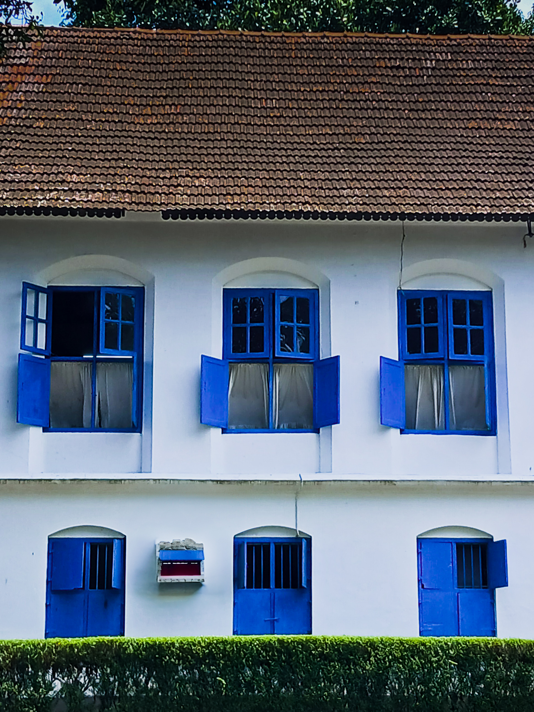
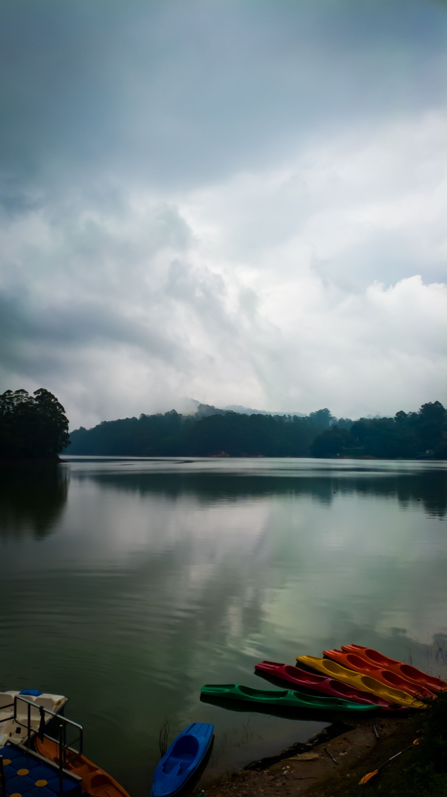
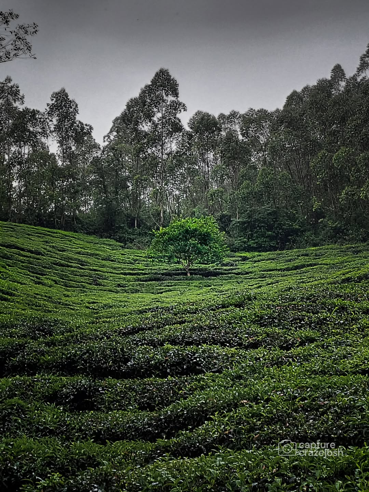
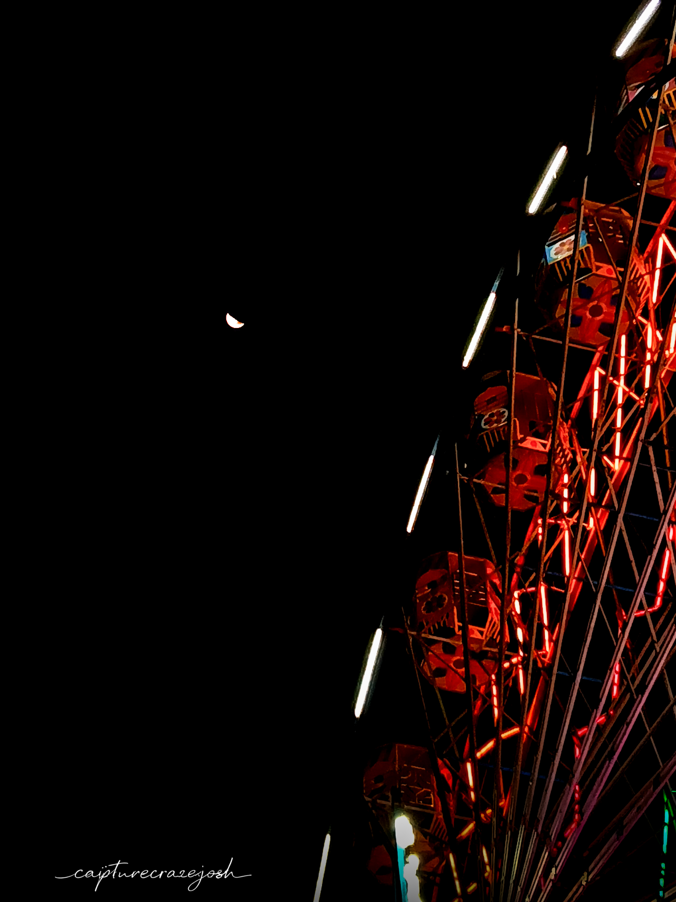

Passionate Photographer
I’m Joshua Joby, a Photographer known online as Capturecrazejosh and the visionary behind Unspoken Corners. I capture unspoken moments, subtle emotions, and the beauty hidden in everyday life. From streets to landscapes, every frame tells a story, and every corner holds a truth. Through my lens, I experiment with light, perspective, and mood—turning ordinary scenes into compelling visual stories. Welcome to my portfolio, where silence speaks.